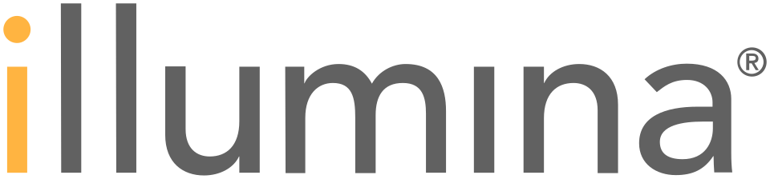

Illumina
Illumina는 미국 캘리포니아주 샌디에이고에 본사를 둔 생명공학 기업이다. 유전적 변이와 생물학적 기능을 분석하는 통합 시스템을 개발, 제조, 판매하며 서열분석 시장 등에 제품을 공급한다.
최종 업데이트

Illumina는 어떤 브랜드인가
Illumina는 유전적 변이와 생물학적 기능을 분석하는 통합 시스템을 개발, 제조, 판매하는 미국 생명공학 기업이다. 1998년에 설립되었고 본사는 캘리포니아주 샌디에이고에 있다.
서열분석, 유전자형 분석, 유전자 발현, 단백체학 시장에 제품과 서비스를 제공하며 155개국 이상에 공급한다. 고객은 유전체 연구 센터, 제약회사, 학술 기관, 임상 연구 기관, 생명공학 기업 등이다.
2014년 1월 기준 유전체 서열분석 장비 시장의 70%를 차지했고, 생산된 DNA 데이터의 90% 이상이 Illumina 장비에서 나왔다. 2010년까지는 연구용으로 표기한 장비만 팔았으나, 2010년 초 BeadXpress 시스템이 FDA 승인을 받아 임상 검사에 쓰일 수 있게 되었다.
Illumina는 어떻게 시작되고 성장했나
Illumina는 1998년 4월 David Walt, Larry Bock, John Stuelpnagel, Anthony Czarnik, Mark Chee가 설립했다. 벤처캐피털 CW Group에서 일하던 Bock과 Stuelpnagel이 Tufts University에서 BeadArray 기술을 발굴해 독점 라이선스를 협상했다.
1999년에는 고속 올리고뉴클레오타이드 합성 기술을 얻기 위해 Spyder Instruments를 인수했고, 2000년 7월 기업공개를 마쳤다. 2001년 SNP 유전자형 분석 서비스를 시작했으며 2002년 첫 시스템인 Illumina BeadLab을 출시했다.
2007년 1월 26일에는 영국 기업 Solexa, Inc.의 인수를 마쳤다.
Illumina의 브랜드 아이덴티티는 무엇인가
유전체 서열분석 장비 시장에서 2014년 1월 기준 70%를 차지했고, 마이크로어레이와 서열분석 기술을 통합 시스템으로 제공하는 생명공학 기업이다.
Illumina의 대표 제품과 서비스는 무엇인가
Illumina는 서열분석, 유전자형 분석, 유전자 발현, 단백체학 시장에 제품과 서비스를 제공한다. 마이크로어레이 기반 제품과 서비스로 SNP 유전자형 분석, 유전자 발현, 단백질 분석을 지원한다.
DNA colony sequencing 기술은 전장 유전체 재서열분석, 유전자 발현 분석, 소형 RNA(sRNA) 분석에 쓰인다. 2009년 6월 30X 깊이의 개인 전장 유전체 서열분석 서비스를 내놓았고, 2014년에는 HiSeq X Ten을 발표했다.
Illumina는 지금 어떤 상태인가
2016년 7월 5일 1999년부터 CEO였던 Jay Flatley가 이사회 상임 의장을 맡았고, 2013년부터 사장이던 Francis deSouza가 CEO를 겸했다. 2015년 말에는 혈류 속 암 종양을 겨냥한 혈액 검사를 다루는 Grail을 분사했으며, 2017년 기준 Illumina는 Grail 지분 20%를 유지했다.
2020년에는 Illumina 데이터를 겨냥한 DNA 데이터 압축 알고리즘을 개발한 Enancio를 인수했다.
Illumina 로고는 어떻게 변해왔나
자주 묻는 질문
Illumina는 어느 나라 브랜드인가요?
Illumina는 미국의 헬스·제약 브랜드입니다.
Illumina는 언제 설립되었나요?
Illumina는 1998년 설립되었습니다.
Illumina의 브랜드 아이덴티티는 무엇인가요?
유전체 서열분석 장비 시장에서 2014년 1월 기준 70%를 차지했고, 마이크로어레이와 서열분석 기술을 통합 시스템으로 제공하는 생명공학 기업이다.
Illumina의 대표 제품은 무엇인가요?
Illumina는 서열분석, 유전자형 분석, 유전자 발현, 단백체학 시장에 제품과 서비스를 제공한다.
Illumina는 현재 어떤 상태인가요?
2016년 7월 5일 1999년부터 CEO였던 Jay Flatley가 이사회 상임 의장을 맡았고, 2013년부터 사장이던 Francis deSouza가 CEO를 겸했다.
Illumina의 본사는 어디에 있나요?
Illumina의 본사는 샌디에고에 있습니다(위키데이터 기준).
Illumina의 공식 웹사이트는 어디인가요?
Illumina의 공식 웹사이트는 https://www.illumina.com/ 입니다.
출처와 검증
Illumina 관련 참고: 공식 웹사이트 · 위키데이터 Q2068984 · 영어 위키백과. 브랜드명은 한글과 원어를 함께 표기하되 데이터에 없는 표기는 만들지 않습니다. 기원 국가·설립연도는 검수된 정의문에서 확인된 값을 우선하고, 없을 때만 공식 웹사이트 URL이 일치하는 위키데이터 개체의 값을 씁니다. 위키데이터 값은 2026-11-14 기준입니다.